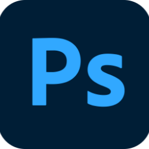

ERMA2.0
ERMA是一套機器維修/送修的服務平台
ERMA2.0是一個在改進送修/維修服務流程的系統，透過重新設計和優化UI/UX，以滿足現代操作模式的需求。這個專案的目標是提高系統的直覺性和使用者體驗，同時保留並加強原有的功能性。
-
使用工具

-
開發


-
參與部分
UI/UX Design視覺版面設計Flow Chart網頁切版/開發
背景
-
為什麼要重新設計
ERMA2.0 客戶服務維修系統，長期使用中客戶反應體驗不佳。隨著市場變革和使用者體驗重要性的提升，我們決定進行系統優化和流程改善，以提供更直覺且易於辨識的使用者界面
- 客戶使用多年，反應體驗不便
- 客戶建議作為主要改進動機
- 目標確保系統符合現代使用者期望
- 提高使用者對系統的使用意願
-
設計目標
ERMA舊版系統存在擁擠、資訊過多的問題，雖然符合UX所說的減少Click的原則，但同時也引發使用者混亂。基於使用者回饋經驗，我們重新設計，將繁複的資訊步驟化，減少選項，提高系統直覺性，避免使用者混亂
- 舊版面擁擠，資訊一次塞給使用者
- 符合UX原則，減少Click動作，但引發資訊過多問題
- 重新設計考量使用者回饋，將資訊步驟化，簡化選項，提高系統直覺性
用戶評論
User Reviews
-
我們的客戶使用後體驗與反饋
要提New request但是一直卡關
產品遇到問題要送修機器，要提New request，但不直覺，而且第一步驟應該要輸入Serial Number，但是他放在畫面的下層。而且輸入完Serial Number，第一時間會不知道後面還要按按鈕，去填寫維修的原因。
需要填的沒填到，不需要填的反而輸入
填寫基本資料，使用者還要知道自己是一般保固還是全保的，因為全部的欄位都開放給使用者填寫，但是非全保的就不需要多填寫部分欄位。
版面資訊太多且複雜
介面上雖然是希望越少click的動作，但可以做更多是最好的，但在我們最常用的new request，卻造成了資訊量過多，太多的選擇項目，版面變複雜，使得使用者會混亂的情況。
資訊內容雜亂，標題與語意不夠清楚
版面上有多個不同的Query(Part's Query、Warranty Query、Status Query)，分散在各個地方，混亂使用者的視覺與功能使用，而且很多的語意不清楚。
重新設計方向
透過四大設計原則優化介面
-
區塊
重新組織介面，透過區塊化介面，提升系統結構清晰度，讓使用者能夠迅速理解和導覽系統。
-
歸類
強調統一操作方式，以減少使用者的學習成本，創造一致的使用體驗，提高使用者的操作效率。
-
留白
運用留白，以突顯主要內容，降低視覺混亂，提供更為輕鬆的使用環境。
-
聚焦
採用步驟化方式呈現功能，減少界面的干擾，增加使用者的專注度，提升操作的順暢感。
色彩計畫
主要色彩
次要色彩
設計重點
-
登入頁面 Login
#Before 舊的Login畫面，很多資訊都塞在一起
#Before

#After 新的用頁籤的切換方式呈現，避免造成混亂
#After

-
#After

-
#Before

#After

-
#After